Peru
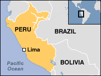
The D.S. Warner School started in 2000 with only 5 kindergarten children. The school motto is "Study, Serve and Share" for it is training students to serve the Lord and their communities.
In preparation for the school's 20th Anniversary in November 2020, you can download a short PDF file on the school's 19 years of history: DSW History.pdf
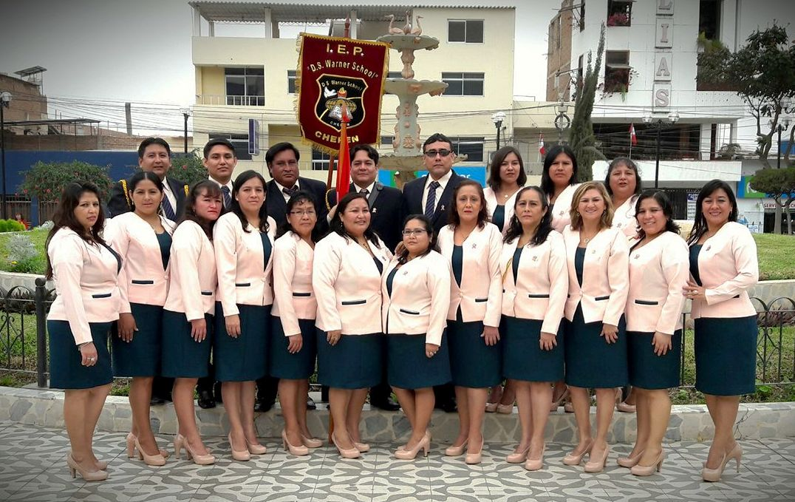
School Teachers
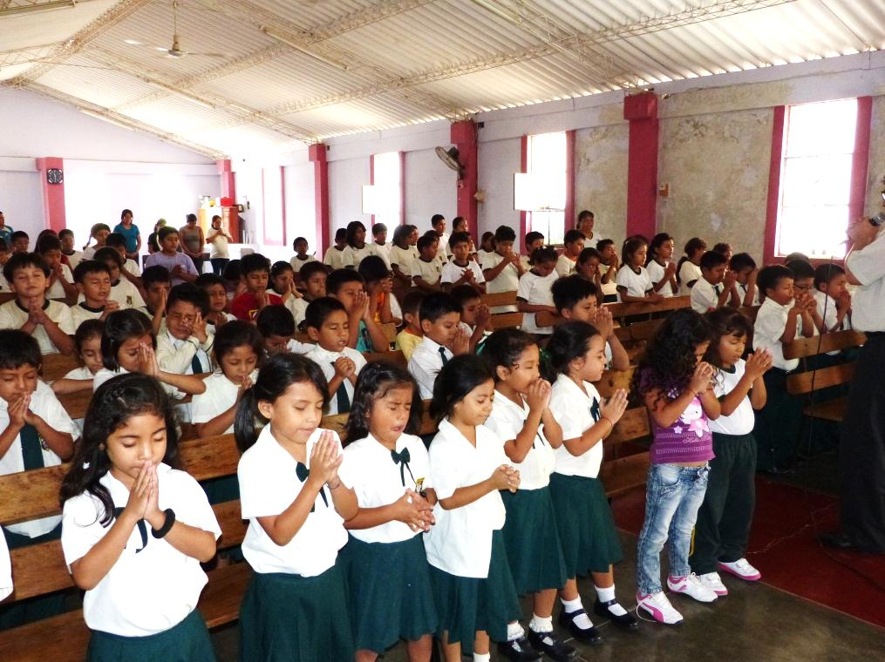
We now have an enrollment of 200 children in 3 yr. old PreK - 6th Grade. Our computer lab is finished and furnished with 24 + computers, which is three times the amount in the public schools. All classrooms have Flat-screen TVs, smart-boards or interactive projectors and security cameras. Partners in Missions helped with the construction of the 4-story building. New families have started attending the church as a result of the school's ministry to the students and city.
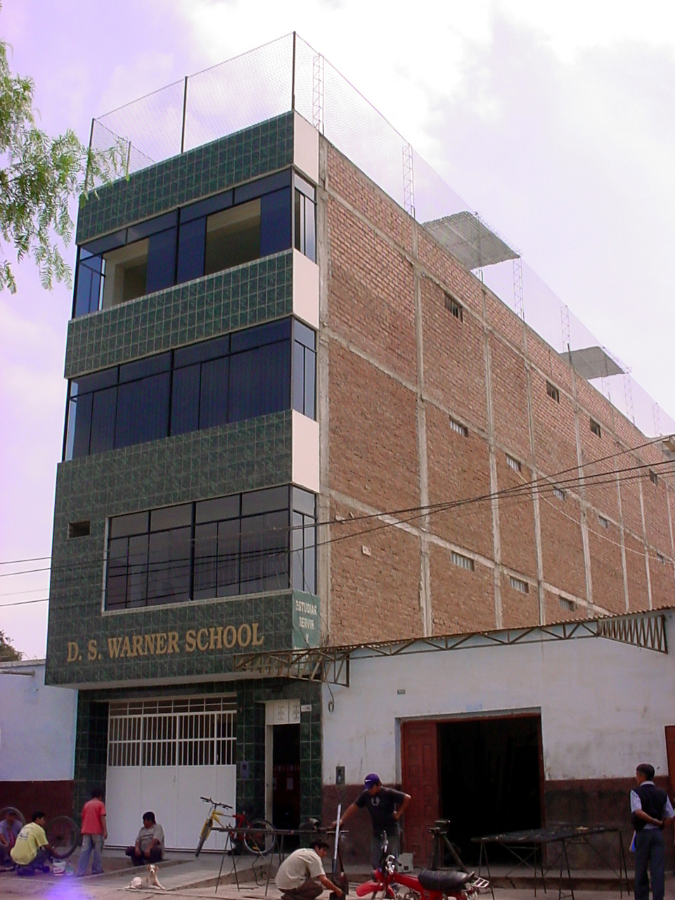
School Building that was dedicated in 2008 School Director: Luis Ahumada
==========
Covid-19 has made it difficult for the Warner School in 2020. The nation's president shut-down all in-building activities for the entire year, therefore all teaching is by virtual education. Many of the students' parents have lost their jobs, therefore the income for the school is down, causing them to be $10,000 behind in staff salary. PiM has been able to send the school $5,000 to assist in the school salary with the help of your donations. Thank you and keep the school in your prayers.
========
The following pictures were taken during the 15th Anniversary of the school November 2 - 9, 2015. The celebration included a parade through the city of Chepen with 9 floats with Bible themes and 4 bands. The local TV station reported the event on the evening news. The school also had a Science Fair with 30 displays in which Karvin was one of the judges. All of the students had on lab coats and explained what their project was and even printed brochures they had designed while in computer class. Our mission team who took part in the anniversary had the opportunity to visit each of the 8 classes as students explained what they had learned this year in Math and Grammar. We were amazed that the 3-year-olds were learning to count and could sing "Jesus Loves Me" in Spanish and English.
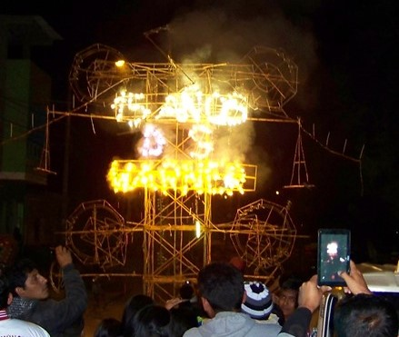
A 20' high fireworks display that spelled "15 Years D.S. Warner"
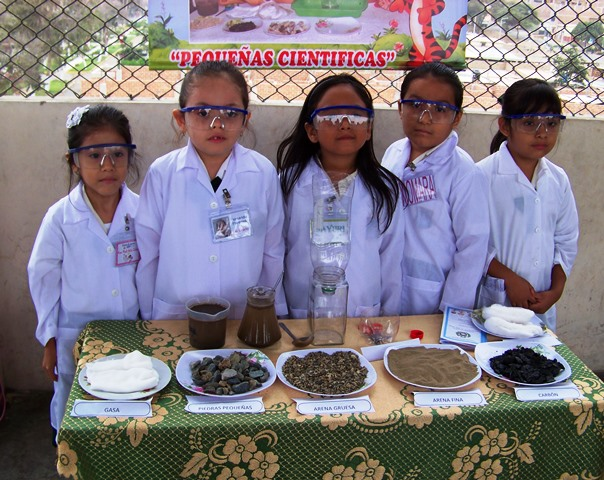
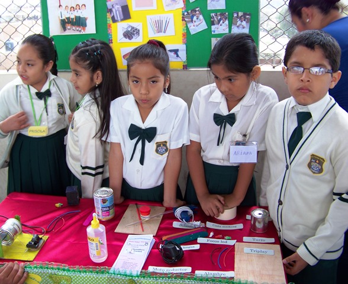
Science Fair
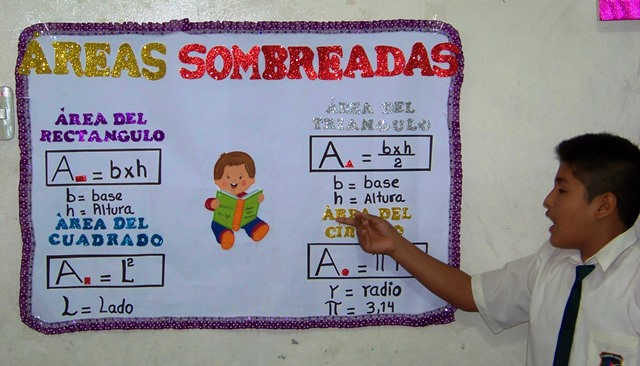
Math Review
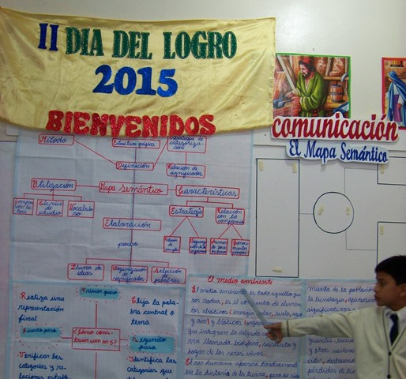
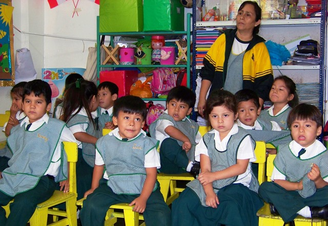
Grammar Review 4-year-old Class
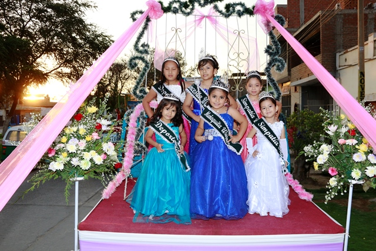
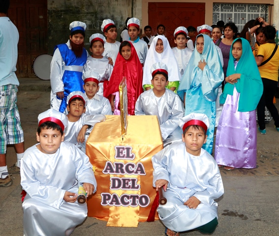
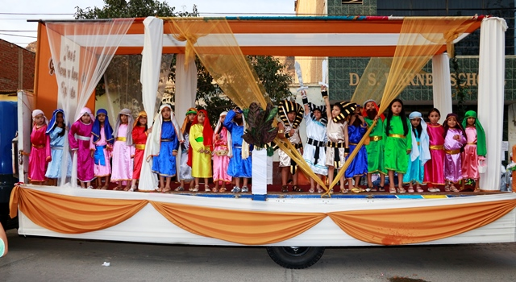
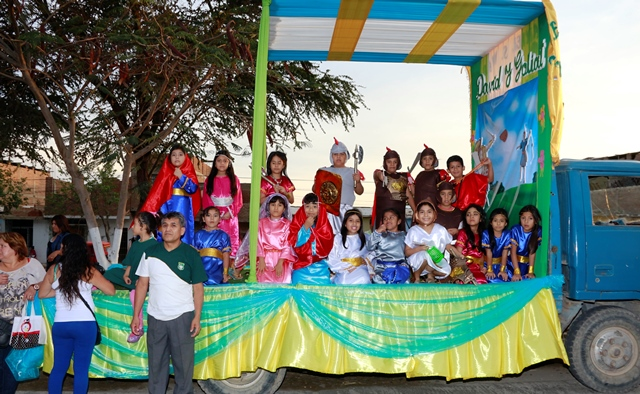
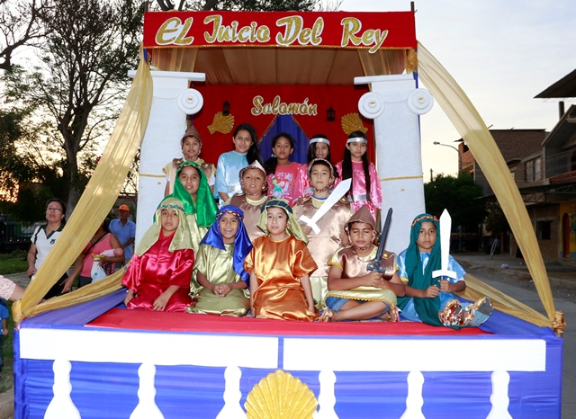
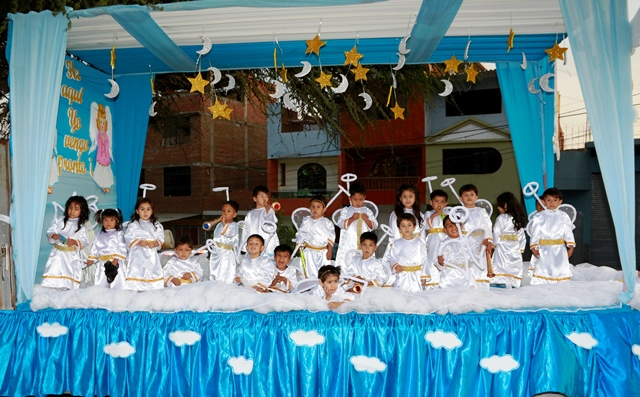
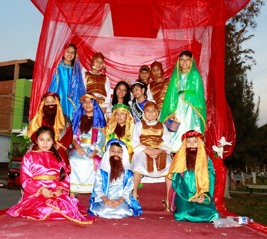
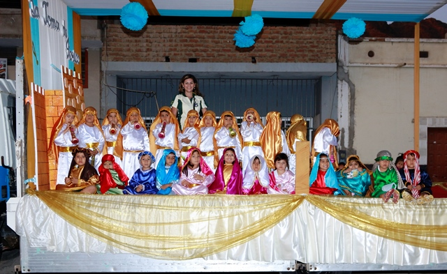
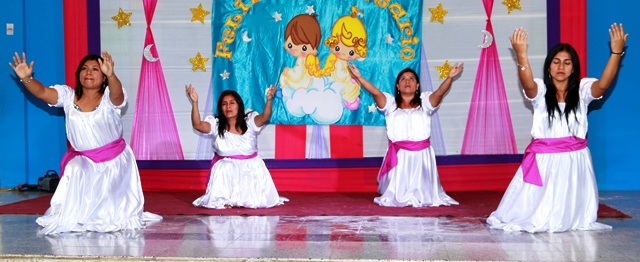
The following pictures are from our August 2013 trip to the school. They had a large presentation that involved the school choir, under the direction of Samuel Perez; typical dances of Peru, under the direction of a profession dancer whose son is a student of our school. Approximately 300 people attended the celebration, which was on the evening TV news.
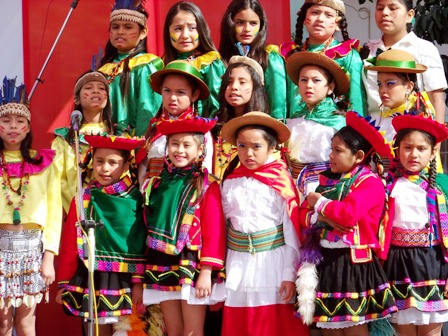
Student Choir in typical Peruvian dress, under the direction of Samuel Perez
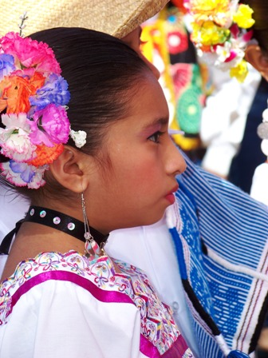
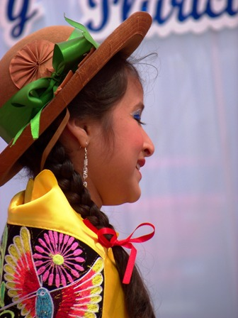
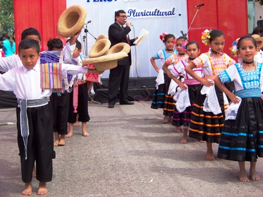
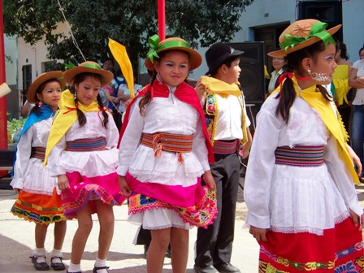
Students always want their fotos taken with us and of course we enjoy the privilege
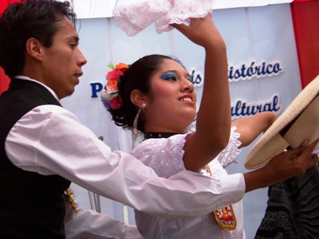
The man who taught our students the Peruvian dances
PowerPoint Presentation of the Warner School (2001-2008 Construction/Students). Will take several minutes to download due to size and speed of your internet.
Below are some links that will give you an idea of the exposure that the school has in the city of Chepen...
~ A commercial that aired on the local TV station: http://youtu.be/Wdr_oDvtlh0
~ Students in Peru's Independence's Parade: http://youtu.be/dk8YmjDkL_8
Two links with up-to-date pictures of the Warner School
www.facebook.com/chogchepen www.facebook.com/DSWarnerSchool